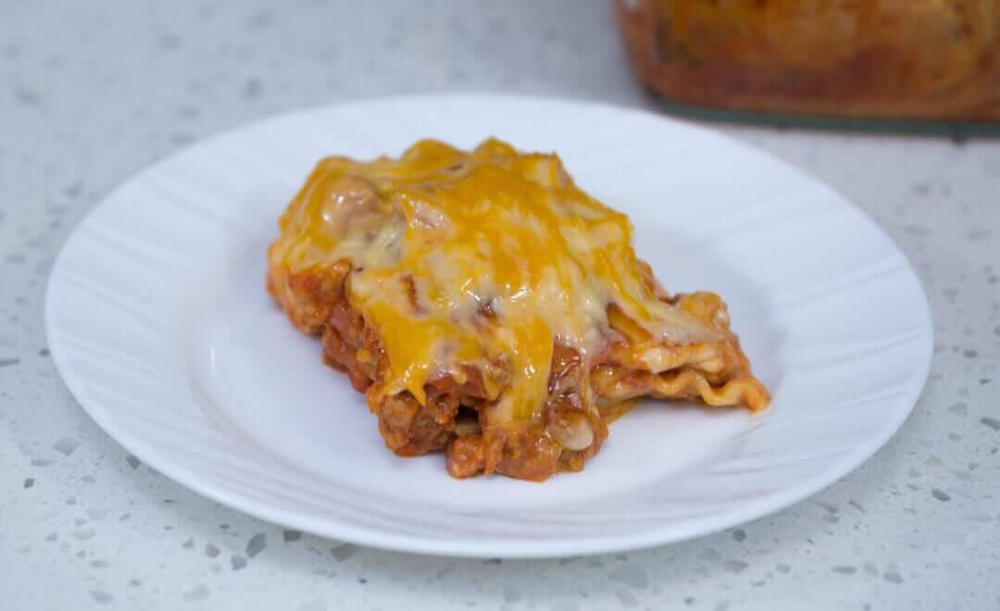

About Lasagna
Home

Description
Lasagna is a classic Italian baked casserole dish consisting of stacked, alternating layers of wide flat pasta, cheese (typically ricotta and mozzarella), meat or tomato sauces, and various seasonings. It is one of the oldest known pasta dishes, with roots in the 14th century, and usually requires at least three layers to be considered a proper lasagna.
Ingredients
Servings for 6 People
- 12 piece lasagna
- 8 cups water
- 2 teaspoons salt
- 3/4 cup shredded cheddar cheese
White Sauce
- 1 1/2 to 1 3/4 cups evaporated milk
- 5 to 6 tablespoons all-purpose flour
- 1/4 cup butter
- 1/2 teaspoon salt
- 1/2 cup shredded cheddar cheese
Meat Sauce
- 1 lb. ground pork
- 1 piece yellow onion chopped
- 5 cloves garlic crushed and chopped
- 2 cans cans tomato sauce 15 oz.
- 1 can tomato paste 6 oz.
- 1 teaspoon crushed dried basil
- 1/4 cup chopped parsley
- Salt and ground black pepper to taste
Steps
- Prepare the meat sauce by searing the ground pork until light brown. Do this by heating a pan and then add the ground pork. Let the pork cook for 30 seconds and then stir for 15 seconds while trying to separate the meat from each other. Let the side that touches the pan cook for another 30 seconds and then repeat the process until the pork turns light to medium brown.
- Add onion. Saute for 30 seconds.
- Add garlic. Continue to cook until onion becomes soft.
- Add chopped parsley and dried basil. Stir.
- Pour tomato sauce into the pan. Stir. Let boil. Cover and cook in low heat for 15 minutes.
- Add tomato paste. Stir. Cover and cook in low heat for 12 minutes or until the sauce thickens.
- Add salt and ground black pepper. Set the meat sauce aside.
- Start to prepare the white sauce by melting the butter in a sauce pan.
- Gradually add the flour. Stir the mixture continuously until it forms a huge lump.
- Pour milk into the sauce pan. Stir thoroughly until the mixture becomes thick and smooth.
- Add cheese. Stir until melted. Set the white sauce aside.
- Boil water in a cooking pot. Add salt. Boil the lasagna for 10 minutes or use the instruction from the package.
- Let the lasagna cool down by discarding the water. You can add tap water to it so that it won’t be soggy and for it to cool down quickly.
- Assemble the lasagna in a square or rectangular baking pan by pouring the meat sauce into the pan. Top with a layer of lasagna (around 4 pieces). Top the lasagna layer with meat sauce, followed by the white sauce. Continue the process by doing the same step until the lasagna is consumed. Finalize the topping by adding shredded cheese on top.
- Microwave for 8 to 10 minutes.
- Serve. Share and enjoy!